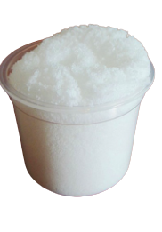
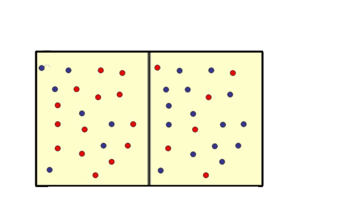

El poliacrilato de sodio lo podemos conseguir en los pañales desechables
2
RECIPIENTE
Vaso desechable plastico (transparente)
3
AGUA
Aproximadamente 50 ml de agua
4
SAL
2 cucharadas de sal
POLIACRILATO DE SODIO
El poliacrilato de sodio es un polímero su característica principal es la capacidad de absorción del agua, este material puede expandir su volumen hasta 500 veces, al agregar agua al poliacrilato se transforma en un compuesto con consistencia gelatinosa.
La capacidad de absorber agua del Poliacrilato de Sodio se debe a que en su estructura existen grupos de carboxilatos de sodio, que al entrar en contacto con el agua se desprenden y dejan libres los iones negativos de carboxilo. Estos iones se repelen, y vuelven a ser sólo estables al absorber moléculas de agua.
(C3H3NaO2)n

ENLACE COVALENTE
Un enlace covalente se forma cuando dos átomos comparten uno o más pares electrónicos. La mayoría de estos enlaces abarcan dos, cuatro o seis electrones, es decir, uno, dos o tres pares electrónicos.
REACCIÓN QUÍMICA
Estos grupos, al entrar en contacto con el agua desprenden el sodio, dejando libres iones negativos de carboxilo. Los iones negativos se repelen, estirando la cadena principal y provocando el aumento de volumen.
La reacción química del poliacrilato de sodio más el agua tiene como nombre ósmosis.

video explicativo
En el video encontraras la explicacion de como realizar nieve quimica casera y sus compuestos quimicos.